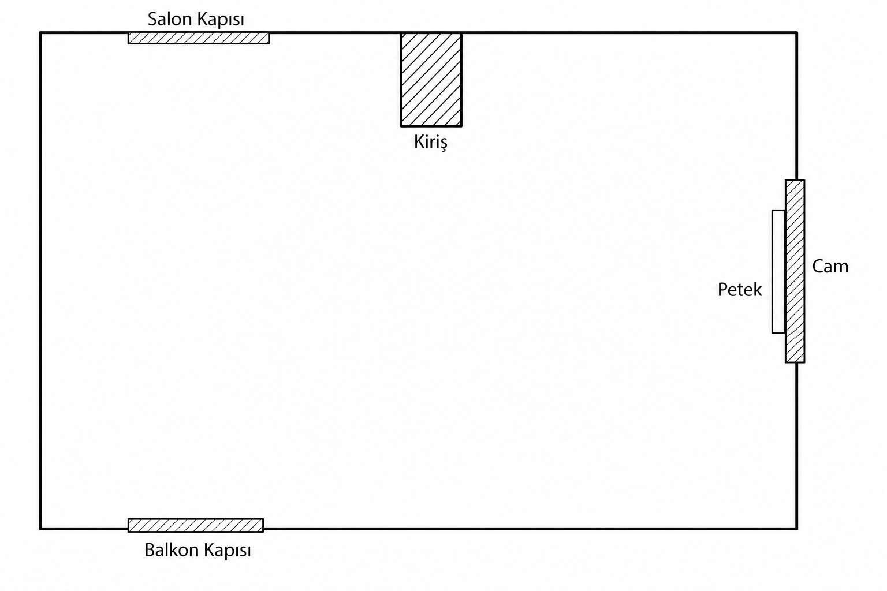

Salon Kapısı + Kiriş
Soldan: kısa duvar → Salon Kapısı (içeri) → kısa duvar → Kiriş odaya çıkıntı → köşeye duvar.
Önceki yanlış okumalar iptal. Kapılar karşılıklı duvarlarda değil — salon üstte, balkon altta; cam sağda.

Çizimdeki sıra. Cm’leri bu duvarlara sonra yapıştırırız — önce şekil doğru.
Soldan: kısa duvar → Salon Kapısı (içeri) → kısa duvar → Kiriş odaya çıkıntı → köşeye duvar.
Duvar → Cam → içeride Petek → aşağı uzun duvar → sağ-alt köşe.
Sağdan sola uzun duvar → Balkon Kapısı (sol-alta yakın) → kısa köşe payı.
Hiç açıklık yok. Sadece düz duvar.
Masa peteğin önünü kapatmadan, cama paralel veya hafif ofset. FJÄLLBO dar model.
En temiz uzun yüzey: BESTÅ veya kanepe. Kapı salınımı yok.
Odaya çıkan kirişe mobilya yaslama; altında/yanında geçiş payı.
Üstte salon, altta balkon — ikisinin de iç açılım yayları boş.